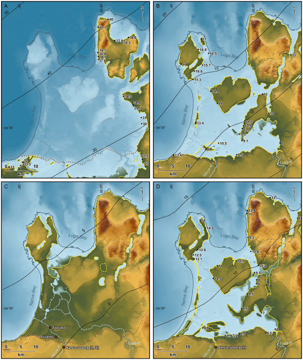
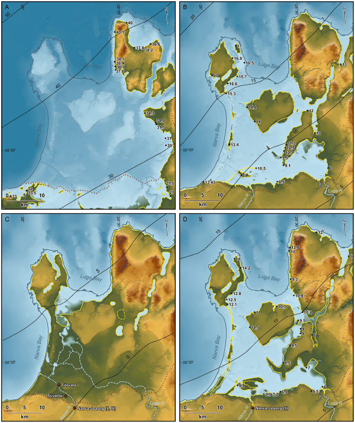

HVHV.00.001 Geoinfosüsteemide rakendusvõimalused humanitaarteadustes
sügis 2022
Praktikum 1 Sissejuhatus
1.1 Kursuse korraldusest
- 3 EAP
- E ja N 12.15-13.45
- Nädalad 4.-9., 11.-16. 10. nädal vaba, st 31. oktoobril ja 3. novembril praktikume ei toimu. Praktikumi ei toimu ka 1. detsembril.
- oktoobri ja 17. novembri praktikumides ei toimu auditoorset õppetööd: iseseisev töö, ülesanded.
- oktoobri ja 17. novembri praktikumides ei toimu auditoorset õppetööd: iseseisev töö, ülesanded.
- Lossi 3-425
- Kontakt ja info: maarja-liisa.pilvik@ut.ee
- Hindamine arvestuslik. Kursuse lõpuks (19. detsembriks) peavad olema esitatud
- vabal valikul 2 kodutööd 4st. Esitamiseks aega kursuse lõpuni;
- lõpuprojekt. Esitlused 8. ja 12. detsembril. Lõpuprojekti esitamise tähtaeg 7.12 kell 12.00 päeval. Soovijatele konsultatsioon 5. detsembril praktikumi tavalisel toimumisajal.
- vabal valikul 2 kodutööd 4st. Esitamiseks aega kursuse lõpuni;
- Kodutööde teemad:
- kaardi kujundamine Mapboxis,
- story map’i tegemine,
- kaardi georefereerimine,
- andmestike ühendamine ja visualiseerimine.
- kaardi kujundamine Mapboxis,
- Arvestuse saamiseks tuleb võtta osa vähemalt 70% auditoorselt toimuvatest praktikumidest, st kohal tuleb käia kokku vähemalt 17 praktikumis 24st. Tänase praktikumi, 6. oktoobri ja 17. novembri praktikumide ning 8., 5. ja 12. detsembri praktikumide eest läheb kohalkäimine kõikidel automaatselt kirja. Vajadusel on võimalikud erikokkulepped.
- Materjale hoitakse ja täiendatakse kursuse kodulehel ja Moodle’is.
1.2 Mis on geoinfosüsteemid?
](imgs/1_example_lotr_uuemaa.jpg)
Joonis 1.1: Eesti kujutatud Sõrmuste Isanda kaartide stiilis, twitter.com/evelynuuemaa
Geoinfosüsteem on arvutipõhine süsteem ruumiliste ja mitteruumiliste andmete kogumiseks, haldamiseks, analüüsiks, visualiseerimiseks ja jagamiseks. Selle abil on võimalik ruumisuhete kaudu mõista oma andmeid paremini või teisest vaatepunktist ning sedakaudu teha kaalutletumaid otsuseid.
Joonis 1.2: Mida GISiga tehakse? (Wallentin et al. 2015)
Joonis 1.3: Sõnapilv Wikipedia artiklist ‘Geographic information system’
Andmete
- kogumine (nt paberkaartide digiteerimine, päringud repositooriumidest, käsitsi sisestamine);
- haldamine (nt andmebaaside struktureerimine, dokumenteerimine);
- analüüs (nt erinevate andmekihtide ühendamine, kattuvate alade arvutamine, puuduvate väärtuste arvutamine, puhveralade arvutamine);
- visualiseerimine (nt kaartide koostamine ja kujundamine);
- jagamine (nt projektide majutamine veebis, andmete ja metaandmete publitseerimine).
Joonis 1.4: GIS kui vihmavari, What are Geographic Information Systems
Ehkki vahel käsitletakse geoinfosüsteeme kui mingit kindlat tarkvara (nt ArcGIS), on GIS definitsioonilt pigem mingite funktsionaalsuste kogum. See tähendab ka seda, et erinevad tarkvarad või selle osad võivad spetsialiseeruda erinevatele GISi funktsioonidele ning mingeid funktsioone (nt andmete kogumine) ei pea üldse tarkvara abil täitma.

Joonis 1.5: Populaarsed GIS tarkvarad
Kuigi GIS võib talletada ka mitteruumilist infot, moodustavad kõige olemuslikuma osa geoinfosüsteemidest siiski just ruumiandmed. Kõige sagedamini kasutatakse GISi geograafiliste andmete töötlemiseks, ent neid saab põhimõtteliselt kasutada mis tahes andmete jaoks, millel on mingid dimensioonid (nt väljamõeldud kohad; inimkeha; planeetide pinnad; puuviljad jne). Geoinfosüsteemidest võib seega kõige lihtsamal moel mõelda kui koordinaatidega varustatud andmebaasidest ja nende sisu analüüsimiseks ja visualiseerimiseks mõeldud tööriistadest.
Tüüpiliselt toimub andmete analüüs GISis kihtide põhimõttel: eri tüüpi infot hoitakse erinevatel andmekihtidel ning nende ühendamisel sünteesitakse uut teadmist.
](imgs/1_gis_natgeo.jpg)
Joonis 1.6: Andmete hoidmine GISis kihtidena, GIS NatGeo
Nagu öeldud, võivad GIS-andmebaasid sisaldada nii ruumilist kui ka mitteruumilist infot. Ruumilist infot väljendatakse koordinaatidega (nt x, y, z, pikkus- ja laiuskraad, kõrgus merepinnast) ning need määravad iga objekti asukoha, kasutades kas punkti, joont, polügooni või pikslit. Mitteruumilist infot, mis mingit kohaga seotud on, väljendavad atribuudid. Atribuudid on tüüpiliselt salvestatud tabelina, kus iga objekt on eraldi real ning iga atribuut eraldi tulbas, või mingis muus (nt hierarhilises) andmebaasistruktuuris.
Joonis 1.7: Näide QGISi atribuuttabelist
Infotehnoloogia arenguga on muutunud võimalikuks säilitada digitaalsel kujul atribuutidena peaaegu mis tahes tüüpi andmeid: nt struktureerimata tekste (raamatuid, veebilehti), pilte, videoid, helifaile. Kuna geoinfosüsteemid on arvutipõhised, nõuavad need siiski, et andmed oleksid mingil moel formaliseeritud. See tähendab ka vahel seda, et tuleb andmetele suruda peale jäigad kategooriad ka seal, kus kategooriatevahelised piirid on tegelikult sujuvad ning on palju üleminekualasid.
1.3 Geoinfosüsteemide ajaloost
)](imgs/1_Snow-cholera-map.jpg)
Joonis 1.8: John Snow koolera leviku kaart (1855) (Wikimedia Commons)
](imgs/1_Timeline-of-major-GIS-events.png)
Joonis 1.9: GISi ajajoon
- Geoinfosüsteeme hakati arendama ja kasutama 1960ndatel, kui akadeemilistes ringkondades hakati uurima kvantitatiivse ja arvutusliku geograafia võimalusi.
- GISi “isaks” peetakse Roger Tomlinsoni (1933-2014), kes 60ndate alguses arendas Kanadas välja kõige esimese geoinfosüsteemi maailmas (Canada Geographical Information System CGIS). Süsteemi ülesandeks oli talletada, võrrelda ja analüüsida Kanada maakasutuse andmeid.
- GISi ulatuslikum areng toimus 1970ndatel ning 1980ndate lõpuks oli fookus juba sellel, kuidas parandada GISi kasutuskogemust.
- Esimestel aastakümnetel oli GIS põhiliselt haldus- ja militaarkasutuses. 1982. aastal tõi ESRI (Environmental Systems Research Institute, Inc.) välja esimese kommertsliku GIS-toote, ARC/INFO, mis põhines Harvard Laboratory Computer Graphicsi poolt arendatud esimesel vektoritega töötaval GISil. ESRI roll GIS-tarkvara arendajana on sellest alates ainult kasvanud.
- 1990ndatest alates hakkas GISi kasutajaskond kiiresti kasvama. Seda soodustas järjest väiksemate, odavamate ja kiiremate arvutite tootmine, andmete ulatuslikum kättesaadavus ning uute satelliitide ja kaugseiretehnoloogia kasutuselevõtt.
- Viimast kaht kümnendit on iseloomustanud lisaks tehnoloogia jätkuvale arengule ka vabavaralise GIS-tarkvara teke, mis on teinud ruumiandmete kasutamise ja analüüsi kättesaadavamaks nii tavakasutajale kui ka talle pakutavate toodete arendajatele. On toimunud nn georuumiline revolutsioon (Geospatial Revolution), mis on muutnud nii seda, kuidas me liigume, otsuseid teeme ja oma lugusid jagame.
Praeguseks kasutatakse geoinfosüsteeme näiteks
- telekommunikatsioonis,
- linnaplaneerimises (näiteks Tallinna Ligipääsetavuse infosüsteem),
- logistikas, navigeerimises (näiteks Veeteede Ameti Nutimer),
- meteoroloogias,
- katastroofide ohjamisel ja leevendamisel,
- tervishoius,
- kuritegevuse analüüsil,
- …
Vt veel rakendusvaldkondi nt siit.
1.4 Ruumiandmed ja GIS humanitaarteadustes
Ehkki näiteks arheoloogias on ruum ja ruumiandmed olnud alati kesksel kohal, on teistes humanitaaria valdkondades (nt ajaloos, kirjandusteadustes) toimunud viimase paarikümne aasta jooksul nn ruumiline pööre (Spatial Turn). Ruumiline pööre algas tegelikult geograafia valdkonna seest: pelga inimelu või -tegevuse mahuti või “lava” tõlgenduse asemel seati fookusesse ruum kui pidevalt muutuv ja kompleksne sotsiaalne moodustis. See võimaldas leida enam ühist keelt ka sotsiaal- ja humanitaarteadlastega. Humanitaarteadustes on küll ruumi ja koha mõistetel olnud alati üsna prominentne roll, ent ruumilise pöörde käigus seati fookus eksplitsiitselt sellele, kuidas sotsiaalsete muutuste ning laiemalt inimtegevuse seletamiseks tuleb võtta arvesse ka ruumilist komponenti. Sealjuures rõhutatakse, et ruum võib ajas muutuda ning et ruumid võivad olla nii füüsilis-geograafilised kui ka abstraktsed, metafoorsed või väljamõeldud (vt nt üle-eelmisel aastal ilmunud Keele & Kirjanduse erinumbrit “Keel ja ruum”). Nõnda on näiteks keskaegses kirjanduses narratiivi loomise seisukohast võrdselt olulised nii London kui ka Camelot; erinevate keelte kohaväljendeid (nt kaassõnu ees, kõrval, taga) uurides saame teada, kuidas mingi keele kõneleja end mõtteliselt millegi suhtes positsioneerib (kas absoluutselt või relatiivselt), kuidas tajutakse aega ruumisuhete kaudu jne.
Ruumi asetamine kesksele positsioonile on digihumanitaaria katusmõiste alla sünnitanud interdistsiplinaarsed valdkonnad nimega geohumanitaaria (GeoHumanities) ja ruumihumanitaaria (Spatial Humanities), mis ühendavad GISi ja klassikalised ruumianalüüsi meetodid (nt teekondade arvutamine, kaartide koostamine) uuemate arvutuslike meetoditega (nt loomuliku keele töötlus, võrgustikuanalüüs, simulatsioonimudelid, tehisnärvivõrgud). Ruumihumanitaaria ja geohumanitaaria vaheline piir ei ole päris selge ning sageli kasutatakse mõisteid sünonüümidena, samuti on mõlemal valdkonnal suur ühisosa inimgeograafiaga. Kui aga eristust tehakse, siis loetakse geohumanitaaria valdkonda pigem konkreetsete, geograafiliste kohtade ja ruumidega tegelevad uurimused ning ruumihumanitaaria alla ka uurimused, mis analüüsivad sümboolseid, ähmaseid või väljamõeldud ruume.
Ehkki mingites humanitaaria valdkondades (nt arheoloogia) on ka geoinfosüsteemid olnud kasutusel juba aastakümneid, on nende võimalusi hakatud teistes humanitaarteaduste harudes rohkem kasutama alles viimase kümne-viieteistkümne aasta jooksul. See on ühelt poolt seotud arvutite võimsuse ning tarkvara ja andmete kättesaadavuse plahvatusliku kasvuga, ent ka teatava suhtumise muutusega humanitaaride seas. Ehkki humanitaaria uurimisobjektid ja andmed on sageli ebatäpsed, hägusad, täpselt määramatud ja fragmentaarsed ning nende analüüs GISi abil pakub endiselt rohkelt väljakutseid, ei nähta tehnoloogias kõigest positivistlikku ja humanitaaraladele olemuslikult sobimatut analüüsivahendit. GISi väärtus humanitaarteadustele seisneb eeskätt selles, et kohainfo (nt kohanime või koordinaatide) kaudu on võimalik ühendada eri formaatides väga erinevat infot, seda visualiseerida ning erinevatest infokihtidest sünteesida uut teadmist. Sealjuures on nõuded absoluutsele täpsusele humanitaarias oluliselt leebemad.
.](imgs/1_keegi_allatiiv.jpeg)
Joonis 1.10: Andrus Saareste käsikirjaline murdekaart sõna ‘keegi’ alaleütleva käände (‘kellelegi’, ‘kellegile’ jm) varieerumisest. Vt rohkem kaarte siit.
Geo- ja ruumihumanitaaria fookus ei ole aga pelgalt tehniliste analüüsimeetodite ja tööriistade kasutamisel ja arendamisel, vaid ka (või isegi eelkõige) ruumide ja kohtade teoreetilistel konstruktsioonidel ning nende muutumisel ajas ning eri kultuurides: kuidas mingites ruumides elatakse, kuidas mingeid ruume sotsiaalselt konstrueeritakse ja kuidas need ruumid omakorda mõjutavad majandust, poliitikat, kultuuri jne.
Siiski on vahest enamgi neid, kes ühel või teisel moel ruumiandmeid ja geoinfosüsteeme oma töös ära kasutavad, ilma et ennast või oma uurimistööd spetsiifiliselt ruumi- või geohumanitaaria valdkonna kaudu defineeriksid. Sellise üldise ruumiandmete analüüsi tööriistakasti koostamisega tegeleme ka siin kursusel.
1.4.1 Arheoloogia
![Muististe jaotumise visualiseerimine ja maastiku nähtavuse analüüsimine [@Kimber2016]](imgs/1_arheo_example_teemakaart_kimber.jpeg)
![Muististe jaotumise visualiseerimine ja maastiku nähtavuse analüüsimine [@Kimber2016]](imgs/1_arheo_example_kimber_lohukivid_totalviewshed.jpg)
{kind=link}
![Muinasaegsete asulakohtade ennustav mudeldamine [@Haav2014] ja kiviaegse maastiku rekonstruktsioonid (9700 - 5300 eKr) [@Rosentau2013]](imgs/1_arheo_example_haav_asulate_mudel.png) 

Joonis 1.12: Muinasaegsete asulakohtade ennustav mudeldamine (Haav 2014) ja kiviaegse maastiku rekonstruktsioonid (9700 - 5300 eKr) (Rosentau et al. 2013)
1.4.2 Veel näiteid
![Rongiliikluse areng Prantsusmaal [@Gregory2014]](imgs/1_example_france_trains_geddes2014.png)
Joonis 1.13: Rongiliikluse areng Prantsusmaal (Gregory et al. 2014)
![Pariisi tänavate nimetamine kirjanduses [@Moncla2019]](imgs/1_example_moncla_paris_street_mentions.png)
Joonis 1.14: Pariisi tänavate nimetamine kirjanduses (Moncla et al. 2019)
1.6 Järgmisel korral
Seminar.
Lugemiseks:
- David J. Bodenhamer (2010). The Potential of Spatial Humanities
- Todd Presner & David Shepard (2015). Mapping the Geospatial Turn
Artiklite pdf-id leiad Moodle’ist.
Arutlemiseks
- Milliseid võimalusi geoinfosüsteemid humanitaariale pakuvad?
- Milliseid humanitaarteaduste ja GISi põrkumise probleemkohti artiklites kirjeldatakse?
- Kas need probleemkohad on maailma kontekstis endiselt aktuaalsed? Aga Eesti kontekstis?
- Milliseid murekohti näed arvutuslike meetodite ja arvutipõhiste tehnoloogiate laiema leviku juures humanitaarteadustes?
- Kas humanitaarteadused on omavahel ühildatavad? Aga teiste valdkondadega? Milline on interdistsiplinaarsete uurimuste/projektide olevik, milline tulevik?